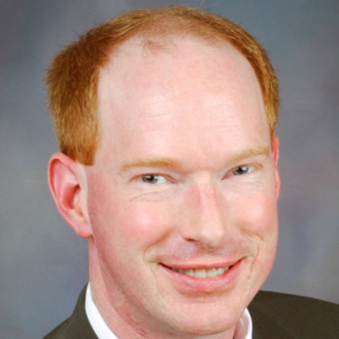

Have a look at the program of the seL4 Summit 2025. We have a great line-up of interesting seL4 work, with a combination of technical research and development, experience reports of seL4 in the field, technical discussions and birds-of-a-feather sessions.
Program at a glance. Go to the full program.
We are pleased to announce that the two keynotes for the seL4 Summit 2025 will be John Hatcliff from Kansas State University and Sebastian Jester from Cyberagentur. John will talk about Model-based Development for seL4 Microkit/Rust with Integrated Formal Methods using HAMR) and Sebastian about Formally verified IT – Germany’s next cybersecurity paradigm.
 Dr. John Hatcliff is a University Distinguished Professor and Lucas-Rathbone Professor of Engineering at Kansas State University working in the areas of safety-critical systems, software architectures, and software verification and certification. He leads the Laboratory on Specification, Analysis, and Transformation of Software (SAnToS Lab), whose research has been funded by national funding agencies and companies including Department of Defense, National Science Foundation, DARPA, Department of Homeland Security, US Army, NASA, NIH, ARO, Air Force Office of Scientific Research, SEI, Collins Aerospace, Galois, and Lockheed Martin.
 Sebastian Jester is Head of Secure Hardware and Supply Chains
at the Agentur für Innovation in der Cybersicherheit (Cyberagentur), which he
joined in 2022. He is on leave from Germany’s Federal Ministry of Research,
Technology and Space, latterly responsible for microelectronics R&D policy at
the national and EU level. He holds a doctorate in astronomy from the
University of Heidelberg and a Master of Physics from the University of
Oxford. The Cyberagentur funds
high-risk research and development projects with a high disruptive potential
in the field of cybersecurity. The Cyberagentur’s goal is to advance internal
and external security and technological sovereignty. It was created in 2020 by
the German Federal Government and is funded by the Federal Ministry of Defence
and the Federal Ministry of the Interior and Home Affairs. The Cyberagentur is
an associate member of the seL4 Foundation.
Sebastian Jester is Head of Secure Hardware and Supply Chains
at the Agentur für Innovation in der Cybersicherheit (Cyberagentur), which he
joined in 2022. He is on leave from Germany’s Federal Ministry of Research,
Technology and Space, latterly responsible for microelectronics R&D policy at
the national and EU level. He holds a doctorate in astronomy from the
University of Heidelberg and a Master of Physics from the University of
Oxford. The Cyberagentur funds
high-risk research and development projects with a high disruptive potential
in the field of cybersecurity. The Cyberagentur’s goal is to advance internal
and external security and technological sovereignty. It was created in 2020 by
the German Federal Government and is funded by the Federal Ministry of Defence
and the Federal Ministry of the Interior and Home Affairs. The Cyberagentur is
an associate member of the seL4 Foundation.